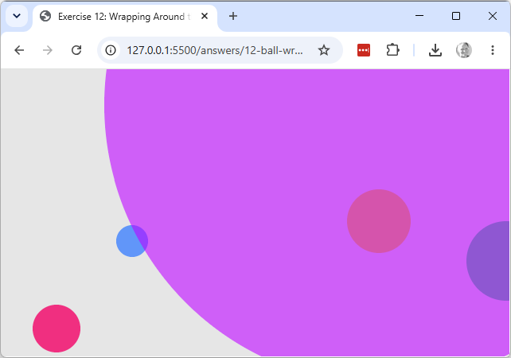

Working copy: exercises/12-ball-wrap/.
diameter is larger than width wraps in a way that looks wrong (part of it
seems to "teleport"). Predict what happens, then try it, to see the edge case sketch 13
handles differently.
x only, leaving y as plain +=. Run it with balls that have
non-zero vy and explain what you see.